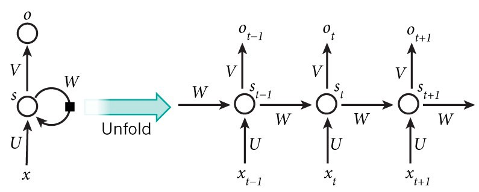
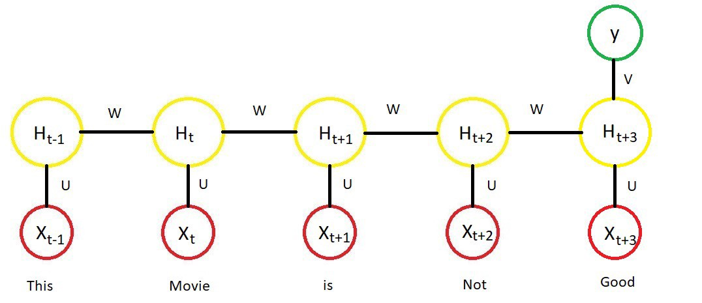
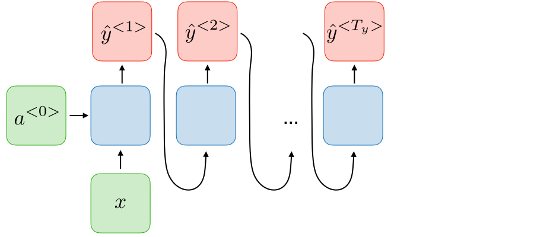
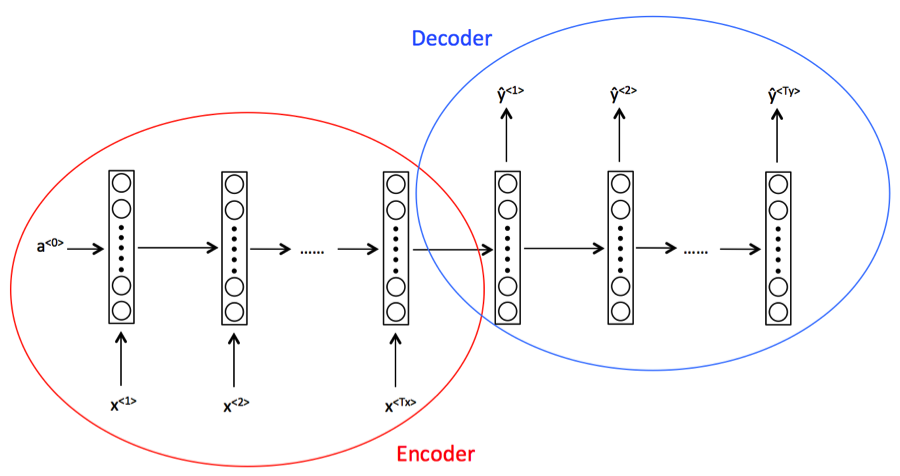
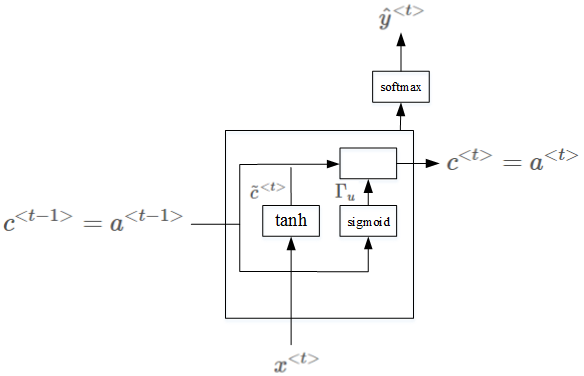

RNN and its applications
Contents
RNN and its applications¶
Recurrent Neural Networks (RNNs) are a form of machine learning algorithm that are ideal for sequential data such as text, time series, financial data, speech, audio, video among others.
RNNs are ideal for solving problems where the sequence is more important than the individual items themselves.
An RNNs is essentially a fully connected neural network that contains a refactoring of some of its layers into a loop. That loop is typically an iteration over the addition or concatenation of two inputs, a matrix multiplication and a non-linear function.
Among the text usages, the following tasks are among those RNNs perform well at:
Sequence labelling
Natural Language Processing (NLP) text classification
Natural Language Processing (NLP) text generation
RNNs effectively have an internal memory that allows the previous inputs to affect the subsequent predictions. It’s much easier to predict the next word in a sentence with more accuracy, if you know what the previous words were.
Often with tasks well suited to RNNs, the sequence of the items is as or more important than the previous item in the sequence.
Natural Language Processing¶
Natural Language Processing (NLP) is a sub-field of computer science and artificial intelligence, dealing with processing and generating natural language data. Although there is still research that is outside of the machine learning, most NLP is now based on language models produced by machine learning.
NLP is a good use case for RNNs and is used in the article to explain how RNNs can be constructed.
Language models The aim for a language model is to minimise how confused the model is having seen a given sequence of text.
It is only necessary to train one language model per domain, as the language model encoder can be used for different purposes such as text generation and multiple different classifiers within that domain.
As the longest part of training is usually creating the language model encoder, reusing the encoder can save significant training time.
RNN for NLP¶
Recurrent Neural Networks or RNN as they are called in short, are a very important variant of neural networks heavily used in Natural Language Processing.
Conceptually they differ from a standard neural network as the standard input in a RNN is a word instead of the entire sample as in the case of a standard neural network. This gives the flexibility for the network to work with varying lengths of sentences, something which cannot be achieved in a standard neural network due to it’s fixed structure. It also provides an additional advantage of sharing features learned across different positions of text which can not be obtained in a standard neural network.
A RNN treats each word of a sentence as a separate input occurring at time ‘t’ and uses the activation value at ‘t-1’ also, as an input in addition to the input at time ‘t’. The diagram below shows a detailed structure of an RNN architecture.

Apart from the architecture mentioned above there are three other types of architectures of RNN which are commonly used.
Many to One RNN : Many to one architecture refers to an RNN architecture where many inputs (Tx) are used to give one output (Ty). A suitable example for using such an architecture will be a classification task.

In the image above H represents the output of the activation function.
One to Many RNN: One to Many architecture refers to a situation where a RNN generates a series of output values based on a single input value. A prime example for using such an architecture will be a music generation task, where an input is a jounre or the first note.

Many to Many Architecture (Tx not equals Ty): This architecture refers to where many inputs are read to produce many outputs, where the length of inputs is not equal to the length of outputs. A prime example for using such an architecture is machine translation tasks.

Encoder refers to the part of the network which reads the sentence to be translated, and, Decoder is the part of the network which translates the sentence into desired language.
Limitations of RNN Apart from all of its usefulness RNN does have certain limitations major of which are :
Examples of RNN architecture stated above are capable of capturing the dependencies in only one direction of language. Basically in case of Natural Language Processing it assumes that the word coming after has no effect on the meaning of the word coming before. With our experience of languages we know that it is certainly not true.
RNN are also not very good in capturing long term dependencies and the problem of vanishing gradients resurface in RNN. Both these limitations give rise to new types of RNN architectures which are being discussed below.
Gated Recurrent Unit¶
It is a modification in the basic recurrent unit which helps to capture long range dependencies and also help a lot in fixing vanishing gradient problem. For a more detailed explanation one can refer to https://towardsdatascience.com/understanding-gru-networks-2ef37df6c9be
LSTM

LSTM¶
In LSTM architecture instead of having one update gate as in GRU there is an update gate and a forget gate. A more detailed explanation of LSTM is available at http://colah.github.io/posts/2015-08-Understanding-LSTMs/
# data: https://download.pytorch.org/tutorial/data.zip
import io
import os
import unicodedata
import string
import glob
import torch
import random
# alphabet small + capital letters + " .,;'"
ALL_LETTERS = string.ascii_letters + " .,;'"
N_LETTERS = len(ALL_LETTERS)
# Turn a Unicode string to plain ASCII, thanks to https://stackoverflow.com/a/518232/2809427
def unicode_to_ascii(s):
return ''.join(
c for c in unicodedata.normalize('NFD', s)
if unicodedata.category(c) != 'Mn'
and c in ALL_LETTERS
)
def load_data():
# Build the category_lines dictionary, a list of names per language
category_lines = {}
all_categories = []
def find_files(path):
return glob.glob(path)
# Read a file and split into lines
def read_lines(filename):
lines = io.open(filename, encoding='utf-8').read().strip().split('\n')
return [unicode_to_ascii(line) for line in lines]
for filename in find_files('data/names/*.txt'):
category = os.path.splitext(os.path.basename(filename))[0]
all_categories.append(category)
lines = read_lines(filename)
category_lines[category] = lines
return category_lines, all_categories
"""
To represent a single letter, we use a “one-hot vector” of
size <1 x n_letters>. A one-hot vector is filled with 0s
except for a 1 at index of the current letter, e.g. "b" = <0 1 0 0 0 ...>.
To make a word we join a bunch of those into a
2D matrix <line_length x 1 x n_letters>.
That extra 1 dimension is because PyTorch assumes
everything is in batches - we’re just using a batch size of 1 here.
"""
# Find letter index from all_letters, e.g. "a" = 0
def letter_to_index(letter):
return ALL_LETTERS.find(letter)
# Just for demonstration, turn a letter into a <1 x n_letters> Tensor
def letter_to_tensor(letter):
tensor = torch.zeros(1, N_LETTERS)
tensor[0][letter_to_index(letter)] = 1
return tensor
# Turn a line into a <line_length x 1 x n_letters>,
# or an array of one-hot letter vectors
def line_to_tensor(line):
tensor = torch.zeros(len(line), 1, N_LETTERS)
for i, letter in enumerate(line):
tensor[i][0][letter_to_index(letter)] = 1
return tensor
def random_training_example(category_lines, all_categories):
def random_choice(a):
random_idx = random.randint(0, len(a) - 1)
return a[random_idx]
category = random_choice(all_categories)
line = random_choice(category_lines[category])
category_tensor = torch.tensor([all_categories.index(category)], dtype=torch.long)
line_tensor = line_to_tensor(line)
return category, line, category_tensor, line_tensor
D:\ProgramData\Anaconda3\lib\site-packages\pandas\compat\_optional.py:138: UserWarning: Pandas requires version '2.7.0' or newer of 'numexpr' (version '2.6.9' currently installed).
warnings.warn(msg, UserWarning)
print(ALL_LETTERS)
print(unicode_to_ascii('Ślusàrski'))
category_lines, all_categories = load_data()
print(category_lines['Italian'][:5])
print(letter_to_tensor('J')) # [1, 57]
print(line_to_tensor('Jones').size()) # [5, 1, 57]
abcdefghijklmnopqrstuvwxyzABCDEFGHIJKLMNOPQRSTUVWXYZ .,;'
Slusarski
['Abandonato', 'Abatangelo', 'Abatantuono', 'Abate', 'Abategiovanni']
tensor([[0., 0., 0., 0., 0., 0., 0., 0., 0., 0., 0., 0., 0., 0., 0., 0., 0., 0.,
0., 0., 0., 0., 0., 0., 0., 0., 0., 0., 0., 0., 0., 0., 0., 0., 0., 1.,
0., 0., 0., 0., 0., 0., 0., 0., 0., 0., 0., 0., 0., 0., 0., 0., 0., 0.,
0., 0., 0.]])
torch.Size([5, 1, 57])
import torch
import torch.nn as nn
import matplotlib.pyplot as plt
from utils import ALL_LETTERS, N_LETTERS
from utils import load_data, letter_to_tensor, line_to_tensor, random_training_example
class RNN(nn.Module):
# implement RNN from scratch rather than using nn.RNN
def __init__(self, input_size, hidden_size, output_size):
super(RNN, self).__init__()
self.hidden_size = hidden_size
self.i2h = nn.Linear(input_size + hidden_size, hidden_size)
self.i2o = nn.Linear(input_size + hidden_size, output_size)
self.softmax = nn.LogSoftmax(dim=1)
def forward(self, input_tensor, hidden_tensor):
combined = torch.cat((input_tensor, hidden_tensor), 1)
hidden = self.i2h(combined)
output = self.i2o(combined)
output = self.softmax(output)
return output, hidden
def init_hidden(self):
return torch.zeros(1, self.hidden_size)
category_lines, all_categories = load_data()
n_categories = len(all_categories)
n_hidden = 128
rnn = RNN(N_LETTERS, n_hidden, n_categories)
# one step
input_tensor = letter_to_tensor('A')
hidden_tensor = rnn.init_hidden()
output, next_hidden = rnn(input_tensor, hidden_tensor)
#print(output.size())
#print(next_hidden.size())
# whole sequence/name
input_tensor = line_to_tensor('Albert')
hidden_tensor = rnn.init_hidden()
output, next_hidden = rnn(input_tensor[0], hidden_tensor)
#print(output.size())
#print(next_hidden.size())
#
def category_from_output(output):
category_idx = torch.argmax(output).item()
return all_categories[category_idx]
print(category_from_output(output))
criterion = nn.NLLLoss()
learning_rate = 0.005
optimizer = torch.optim.SGD(rnn.parameters(), lr=learning_rate)
def train(line_tensor, category_tensor):
hidden = rnn.init_hidden()
for i in range(line_tensor.size()[0]):
output, hidden = rnn(line_tensor[i], hidden)
loss = criterion(output, category_tensor)
optimizer.zero_grad()
loss.backward()
optimizer.step()
return output, loss.item()
current_loss = 0
all_losses = []
plot_steps, print_steps = 1000, 5000
n_iters = 100000
for i in range(n_iters):
category, line, category_tensor, line_tensor = random_training_example(category_lines, all_categories)
output, loss = train(line_tensor, category_tensor)
current_loss += loss
if (i+1) % plot_steps == 0:
all_losses.append(current_loss / plot_steps)
current_loss = 0
if (i+1) % print_steps == 0:
guess = category_from_output(output)
correct = "CORRECT" if guess == category else f"WRONG ({category})"
print(f"{i+1} {(i+1)/n_iters*100} {loss:.4f} {line} / {guess} {correct}")
plt.figure()
plt.plot(all_losses)
plt.show()
def predict(input_line):
print(f"\n> {input_line}")
with torch.no_grad():
line_tensor = line_to_tensor(input_line)
hidden = rnn.init_hidden()
for i in range(line_tensor.size()[0]):
output, hidden = rnn(line_tensor[i], hidden)
guess = category_from_output(output)
print(guess)
while True:
sentence = input("Input:")
if sentence == "quit":
break
predict(sentence)
---------------------------------------------------------------------------
ModuleNotFoundError Traceback (most recent call last)
<ipython-input-3-b882a226ed61> in <module>
3 import matplotlib.pyplot as plt
4
----> 5 from utils import ALL_LETTERS, N_LETTERS
6 from utils import load_data, letter_to_tensor, line_to_tensor, random_training_example
7
ModuleNotFoundError: No module named 'utils'